Aktuálna ponuka
Nehnuteľnosti, ktoré ponúkam
12 nehnuteľností na predaj a prenájom. Vyberte typ, alebo napíšte lokalitu.
12 z 12 ponúk
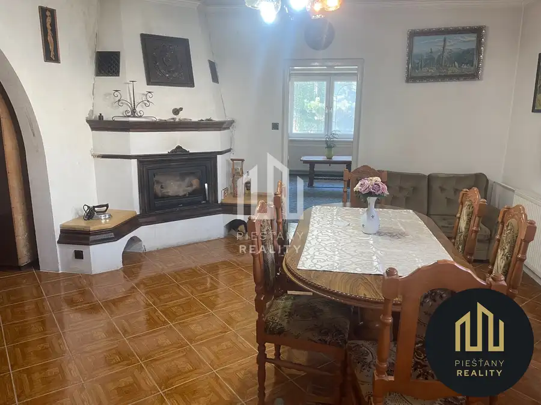
DomNové10 169 000 €Na predaj rodinný dom - pokoj, príroda, Nová Lehota Nová Lehota 150 m² Ponúkame na predaj priestranný rodinný dom v malebnej obci Nová Lehota, známej aj z populárneho televízneho seriálu. Obec leží v krásnom prírodnom…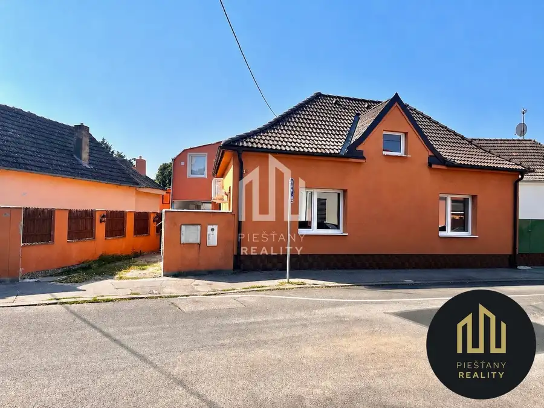
Dom10 199 900 €3-izbový rodinný dom (možnosť 4 izieb) Piešťany, ul. Hoštáky Piešťany 90 m² Ponúkame na predaj samostatne stojaci rodinný dom v širšom centre Piešťan, na ulici Hoštáky. Do centra mesta a na pešiu zónu prejdete pešo za 10 – 15…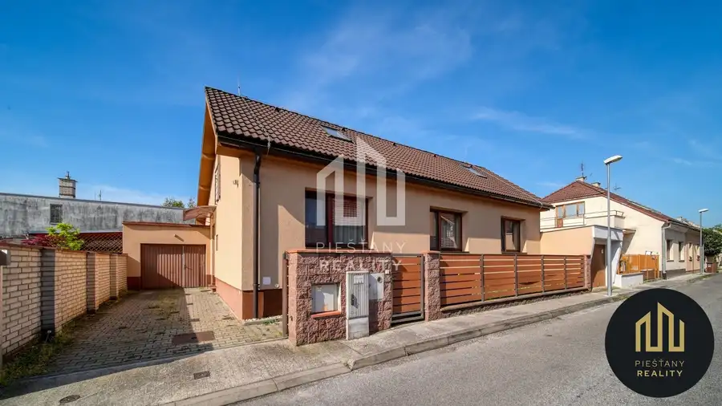
Dom10 390 000 €Skvelá lokalita - na predaj rodinný dom, Piešťany Piešťany 200 m² 12300 - Na predaj veľký rodinný dom, ktorý sa nachádza v skvelej lokalite mesta Piešťany, v širšom centre na Matúškovej ulici. Dom je postavený z…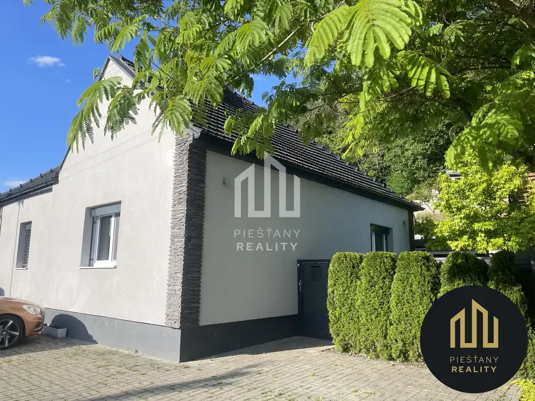
Dom10 199 900 €NOVÁ CENA, 3-izbový rod. dom, Ratnovce, Piešťany Ratnovce 80 m² Na predaj tehlový rodinný dom v obci Ratnovce, len 5 minút autom od Piešťan, po kompletnej rekonštrukcii v rokoch 2017 - 2019.Dispozícia (80 m²):…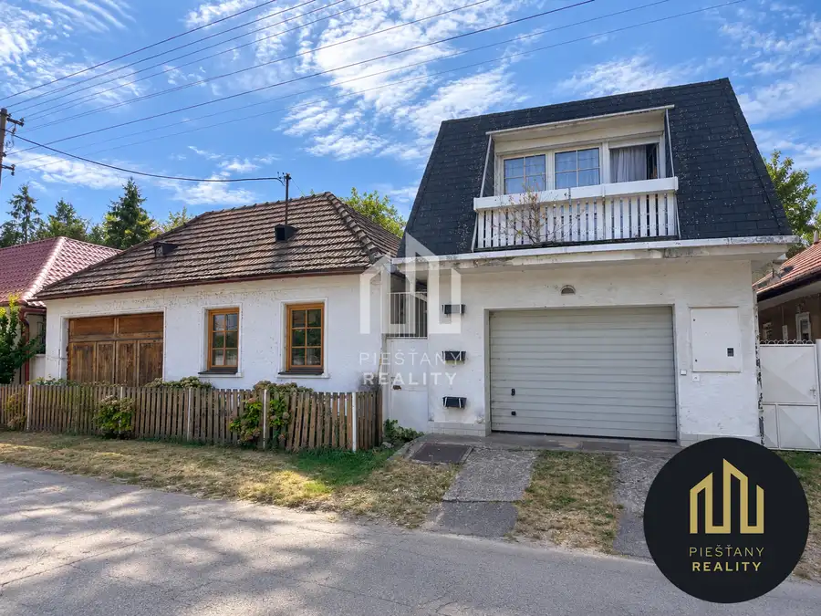
Dom10 220 000 €Dva rodinné domy, pozemky 2 004 m² - Ratnovce pri Piešťanoch Ratnovce 200 m² Ponúkame na predaj dva susediace rodinné domy od jedného vlastníka v Ratnovciach, obci len 3 km vzdialenej od Piešťan. Predávajú sa prednostne spolu…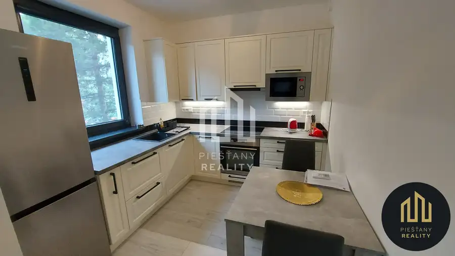
BytNové10 Cena dohodouNA PRENÁJOM | 1-izbový byt pri Sĺňave, Piešťany - Banka Piešťany 1-izbový33 m²1. podlažie Ponúkame na prenájom pekný a kompletne zariadený 1-izbový byt v novostavbe TILIA pri Sĺňave. Byt má výmeru 33 m² + lodžia 4 m², nachádza sa na 1.…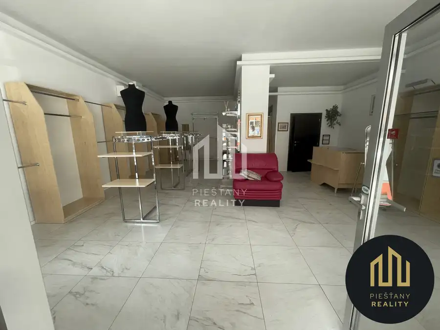
Komerčné priestoryNové10 Cena dohodouPrenájom | obchodný priestor 64 m² v centre Piešťan – enzo Piešťany 64 m² Piešťany Reality ponúka na prenájom obchodný priestor v centre Piešťan, v budove ENZO na Nálepkovej ulici.Priestor sa nachádza na prízemí s priamym…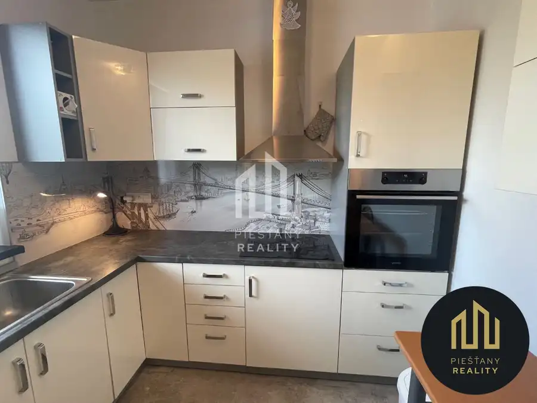
Byt10 Cena dohodouNa prenájom 1-izbový byt s parkovacím miestom, Piešťany-Banka Piešťany 1-izbový33 m²3. podlažie 1258 - Na prenájom pekný 1-izbový apartmán v novostavbe TILIA v tichom prostredí pri Sĺňave. Bytový dom bol postavený a skolaudovaný v marci 2021.…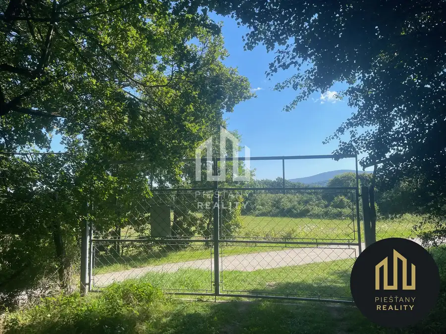
Pozemok10 Cena dohodouNa predaj samostatná zvernica-poľovný revír 100 ha, Jablonica Jablonica 1000000 m² 1101 - Na predaj samostatná zvernica nachádzajúca sa v Malých Karpatoch v nadmorskej výške 250 až 430 m n.m. Zvernica je schválená ako samostatný…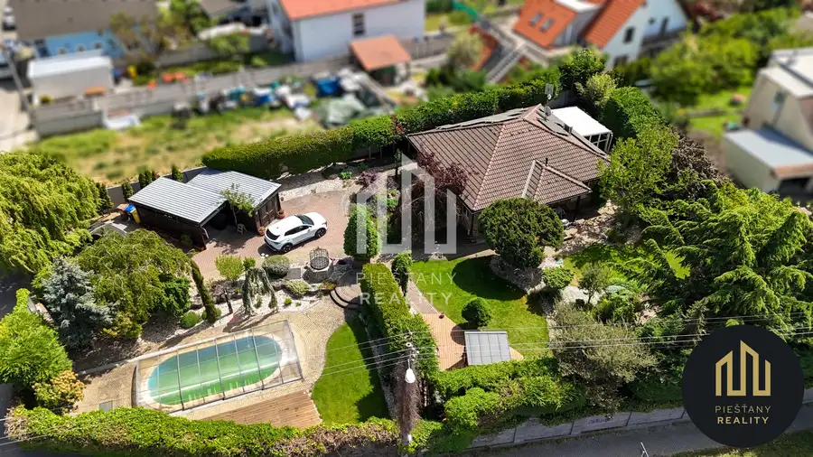
Dom10 Cena dohodouRodinný dom s veľkou záhradou, bazénom a wellness – Piešťany Piešťany 120 m² Hľadáte dom, ktorý ponúka súkromie, veľký pozemok a priestor na oddych, pritom zostanete na dosah centra Piešťan?V obľúbenej časti Staré Piešťany…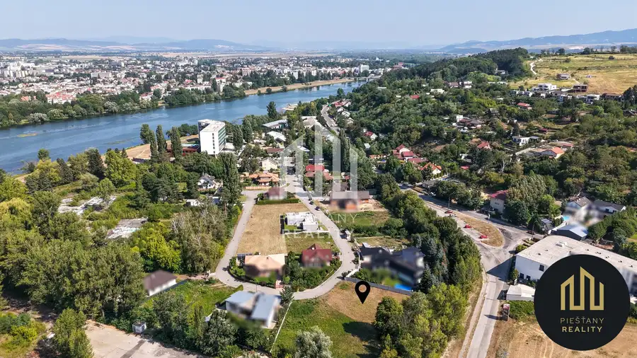
Pozemok10 Cena dohodouPozemok 1 345 m² na predaj | Sĺňava II, Banka pri Piešťanoch Banka 1345 m² Ponúkame na predaj rovinatý, slnečný pozemok s celkovou výmerou 1 345 m² v tichej rezidenčnej zóne Sĺňava II v obci Banka, len pár minút od centra…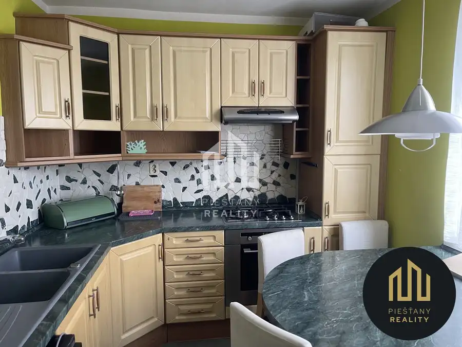
BytRezervované10 Cena dohodouNa prenájom 4-izbový byt, ul. Scherera, Piešťany Piešťany 4-izbový80 m²6. podlažie Na prenájom 4-izbový byt na ulici Scherera v Piešťanoch. Výmera bytu je 80m2, dispozíciu tvorí: vstupná chodba so zabudovanými šatníkmi, kuchyňa, 2x…Tomuto výberu zatiaľ nezodpovedá žiadna ponuka. Napíšte mi, čo hľadáte.